Day 1: First Impressions, Scent of the Island, and the Logistical Hustle
Our journey officially began on May 26 as the wheels touched down on Maui at around 1:45 PM. Stepping off the plane and walking through the open-air corridors, we were instantly greeted by the iconic island welcome.
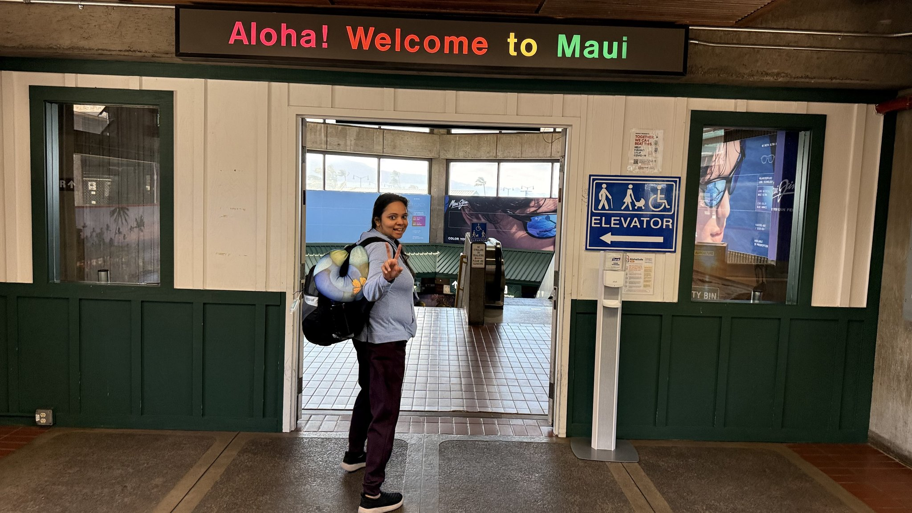
Stepping out, the island immediately enveloped us in an atmosphere that felt deeply, strangely familiar. The warm, heavy humidity and the vibrant green landscape instantly pulled at our memories, reminding us both so much of Kerala. The weather was simply too flawless to pass up; refusing to lock ourselves inside a sterile airport tram, we decided to skip it entirely and walk the path toward the rental car building, eager to soak in our first real moments under the Hawaiian sun. As we walked, Shweta caught a distinct, sweet fragrance drifting through the breeze—a soft, unmistakable blend of tropical blooms and island cocktails that seemed to gently welcome us to paradise.
However, the island quickly reminded us that even paradise has its logistical hurdles. The luggage arrival hall and rental car counter area were chaotic, plagued by a total lack of direction and long lines of weary travelers.
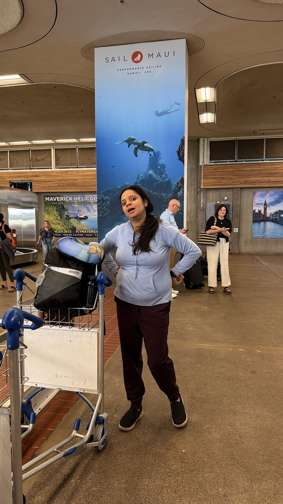
To make matters worse, trying to decipher the rental agent's nearly unreadable handwriting to figure out where our vehicle was parked turned into a frustrating guessing game. It took a stressful, agonizing 30 minutes of sorting through the confusion before we finally secured the keys and officially made it to our car, a dark grey Nissan Altima from Thrifty.
Anxious to get the administrative chores out of the way, our first major destination was the local Costco. We navigated the aisles to stock up on the essential survival gear for a week on the island: bulk snacks, water, and fresh provisions. While there, fueled by pure day-one optimism and grand visions of conquering the Pacific, we also proudly bought a brand-new snorkel gear set for Shweta. We were officially ready for the ocean—or so we highly convinced ourselves.
The late afternoon hunger was real, and we headed over to Tiki Tiki Thai Cuisine in Kahului to grab some food. We ordered the Drunken Noodle and the Summer Roll Tofu. The meal hit the absolute spot and grounded us after a long day of flying.
Once we got checked in and sorted out at the Maui Beach Hotel in Kahului, we headed out to catch our very first West Maui coastal views. Standing out by the water with the mountains rising in the background, the travel fatigue completely evaporated.
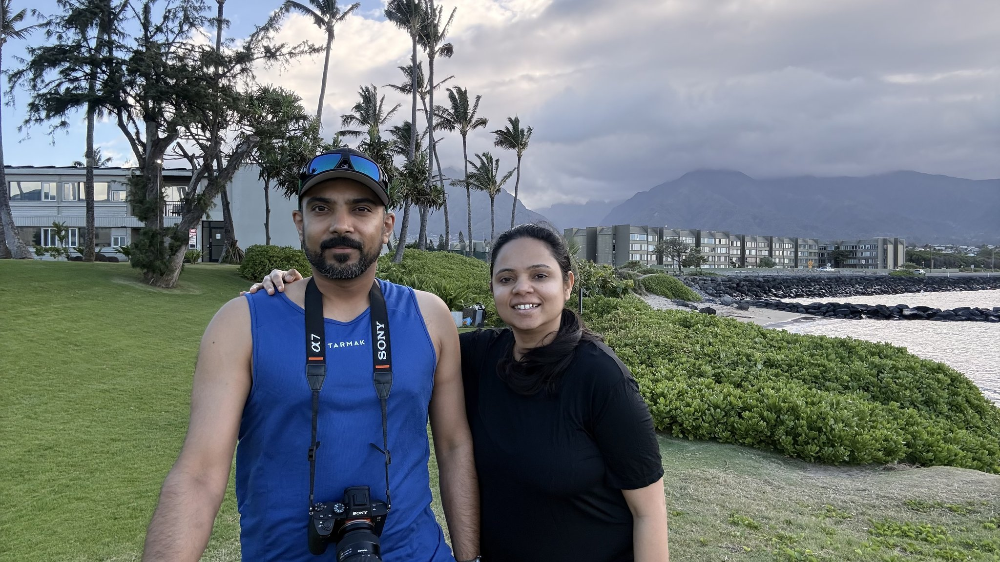
As the afternoon light began to soften, we were treated to an absolute masterpiece of a sunset. The sky transformed from a soft blue into an intense, glowing canvas of deep amber and gold. Watching the sun dip right below the ocean horizon was the ultimate welcome to the island.
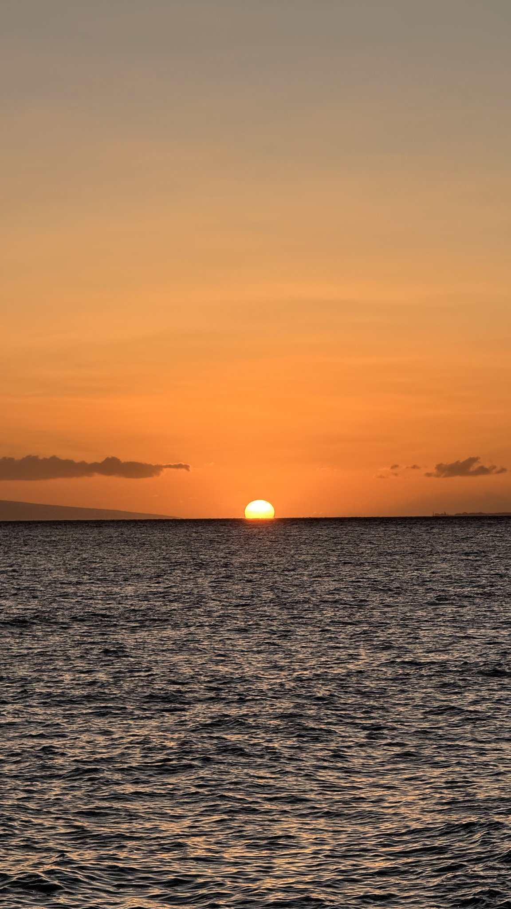
We then drove through the fading evening light back to the Maui Beach Hotel to unpack our bags, listen to the foreign rustle of the palm trees outside, and go to sleep early.
Day 2: The Sunrise, the Wild Roosters, and the Road to Hana
The second day on the island began long before the rest of the world woke up. Having narrowly missed out on securing tickets for the legendary Haleakala National Park sunrise, we refused to let the early morning hours go to waste. Instead, we pivoted our plans and set our sights on Ho'okipa Beach Park, arriving just as the first faint lines of amber and violet began to pierce the horizon.
The experience was nothing short of surreal. As the sun slowly lifted over the vast Pacific, painting the clouds in dramatic hues of gold, the sky opened up into a breathtaking canvas.
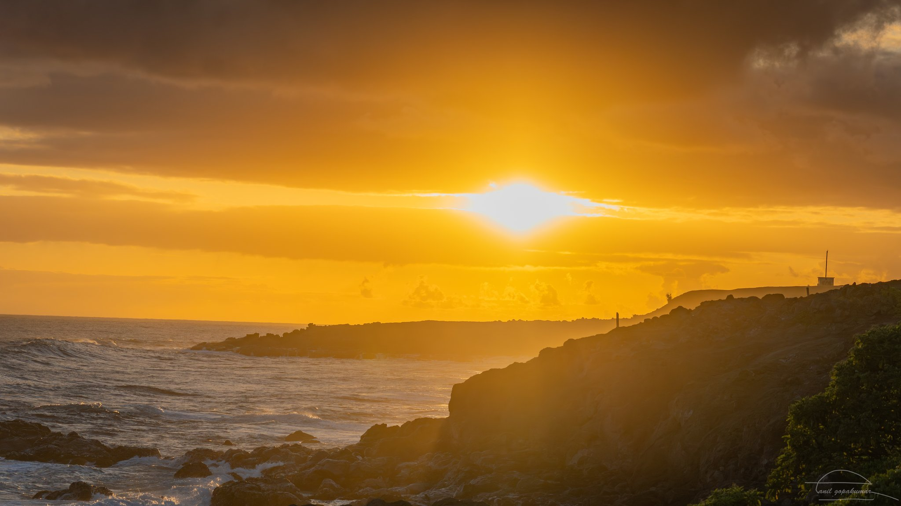
Down on the pavement, we were greeted by an unexpectedly charming welcoming committee: wild chickens and roosters roaming freely around the empty parking lot, their crows echoing over the sound of crashing waves. It was a raw, beautifully chaotic slice of Hawaiian coastal life.
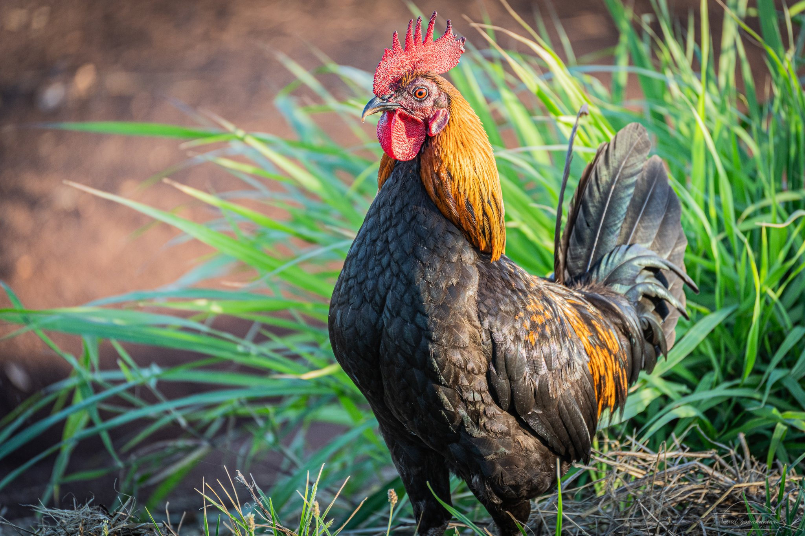
Out on the water, early morning surfers were already catching the thundering swells, their silhouettes cutting through the golden spray of the breaking waves as the sunrise illuminated the coastline.
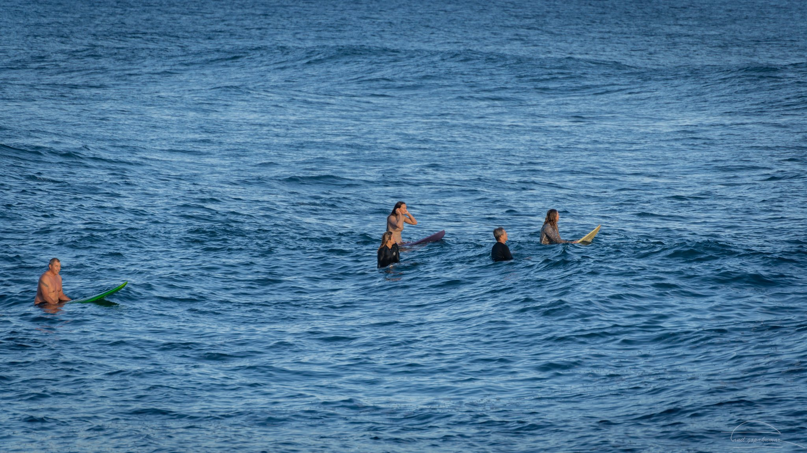
With the day officially broken, we commenced our journey onto the legendary Road to Hana. This wasn’t just a drive; it was a sensory immersion into a tropical wonderland. Our first intentional pitstop was at Baked on Maui, a hidden gem nestled in Pauwela. The aroma of freshly brewed coffee and warm, artisanal pastries filled the air—the perfect fuel for the winding journey ahead.
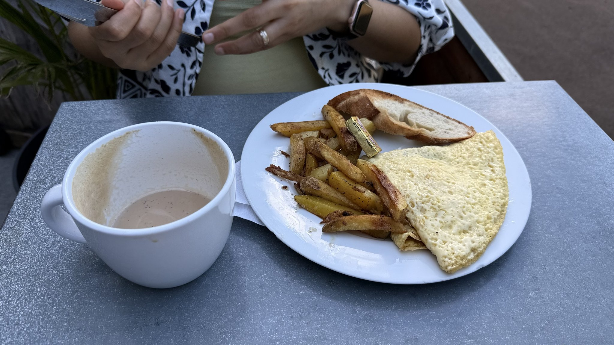
As we pushed forward, the highway transformed into a labyrinth of emerald green. One of the absolute highlights along the early stretches of the road was passing the majestic Rainbow Eucalyptus trees. Standing next to them, the bark looked like an abstract canvas painted with vivid streaks of green, orange, and deep crimson.
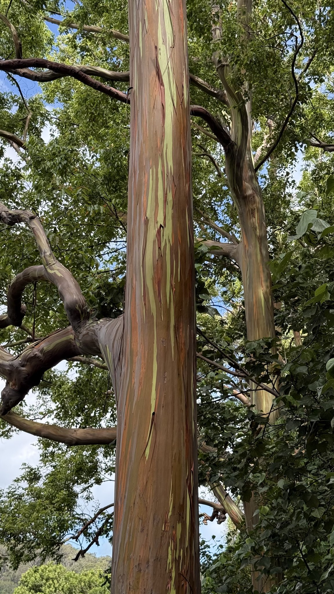
The sheer scale of the island's flora kept catching us off guard. Further along, we paused beneath a colossal, ancient Banyan tree. Its massive, curtain-like aerial roots cascaded all the way down to the forest floor like a living cathedral, completely blocking out the sun and making us feel wonderfully small in the middle of the jungle.
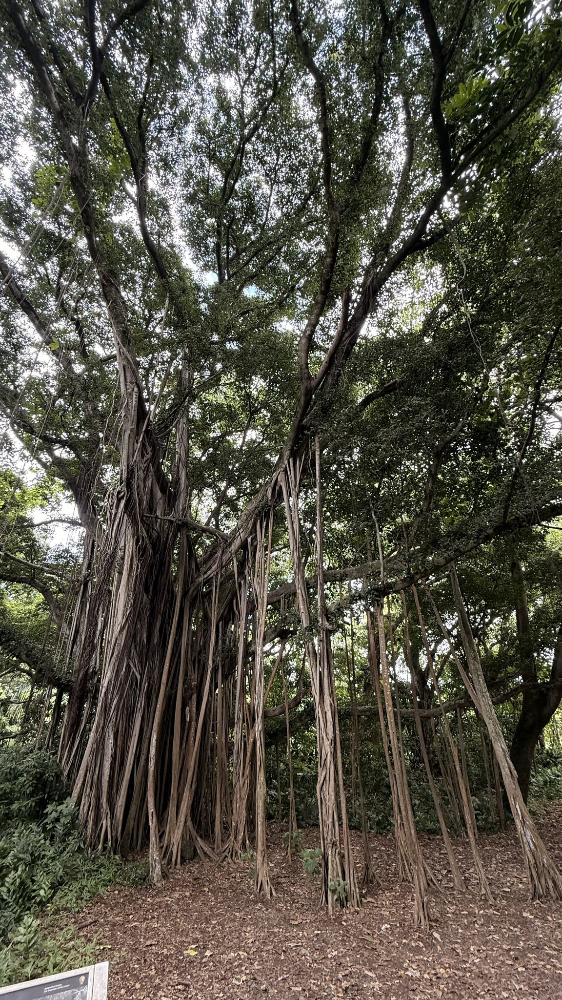
Every sharp turn revealed a new marvel—dense rainforest canopies on one side, and dramatic coastal cliffs dropping off into deep blue waters on the other. After driving past Hana, we inlanded briefly to check out the iconic, sheer green peaks at Iao Valley State Monument before pressing back down toward the coast.
The landscape shifted dramatically as we reached the striking Black Sand Beach. The contrast was unbelievable—stark, midnight-black volcanic sands meeting the bright white foam of the crashing Pacific surf.
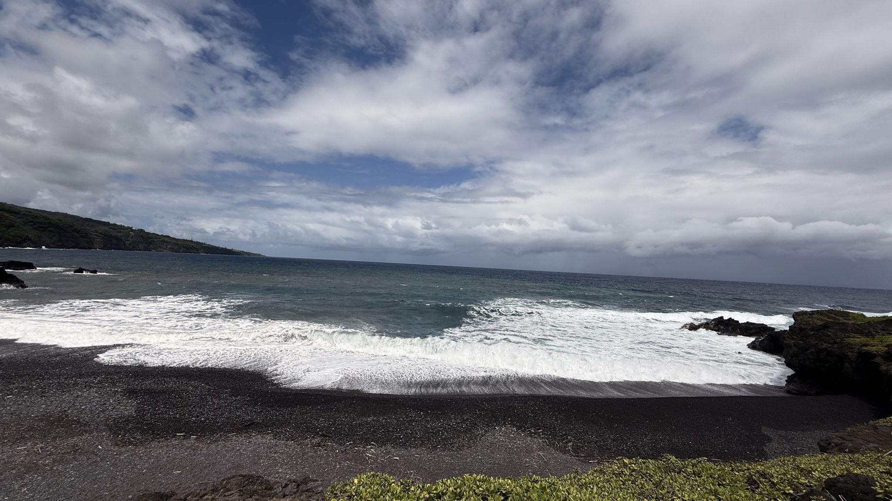
We stopped frequently, stepping out of the car to marvel at the sheer scale of the natural landscape, capturing a quick photo of me and Shweta with a beautiful hidden waterfall plunging into a pool right behind us, and standing at the edges of dramatic sea arches carved out of old lava rock.
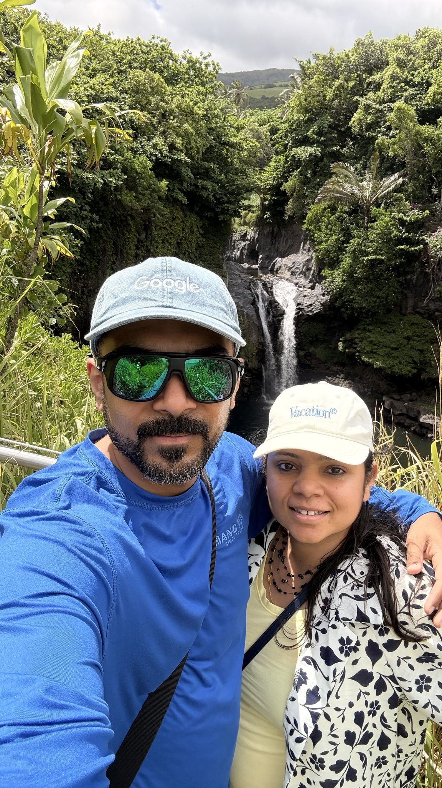
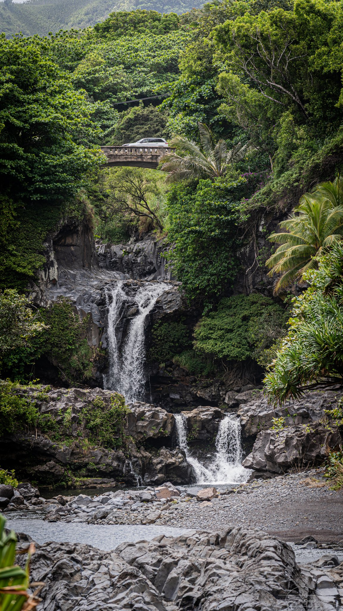
Beyond Hana, the highway gave way to the raw, unpaved back-road route — a stretch of breathtaking cliff-side beauty that few visitors venture onto. Vertical drops plunged straight into the turquoise Pacific, framed by jagged volcanic rock and wild coastal scrub as far as the eye could see.
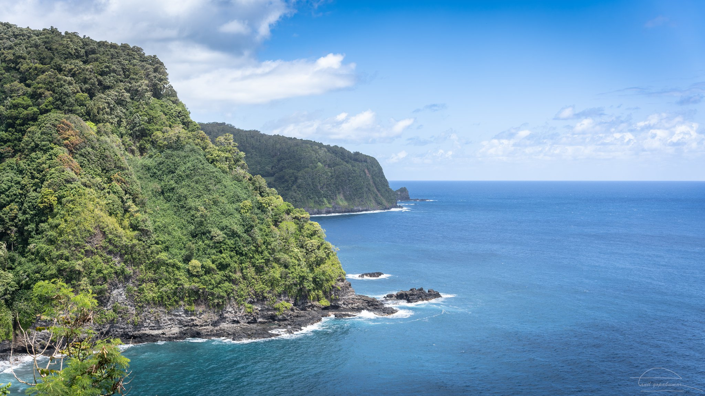
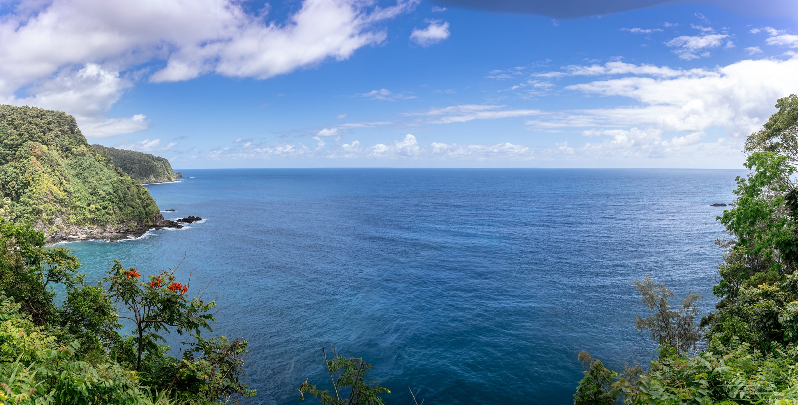
Then came the drive back toward Kahului along the rugged back-road route. As the dense jungle slowly gave way to sweeping, windswept coastal grasslands, the terrain turned beautifully raw and exposed. The road hugged the edge of steep cliffs dropping directly into the deep blue expanse of the ocean.
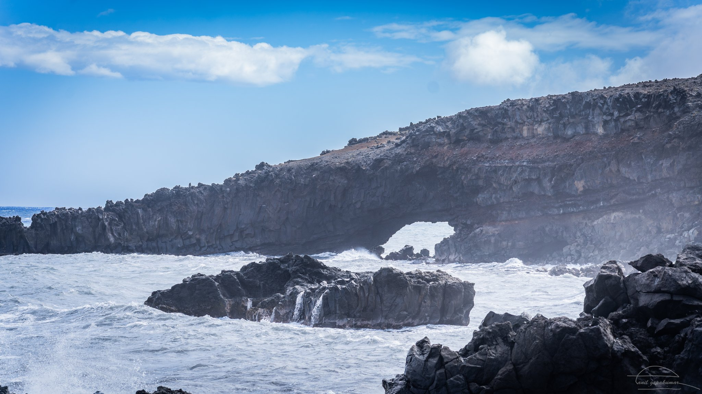
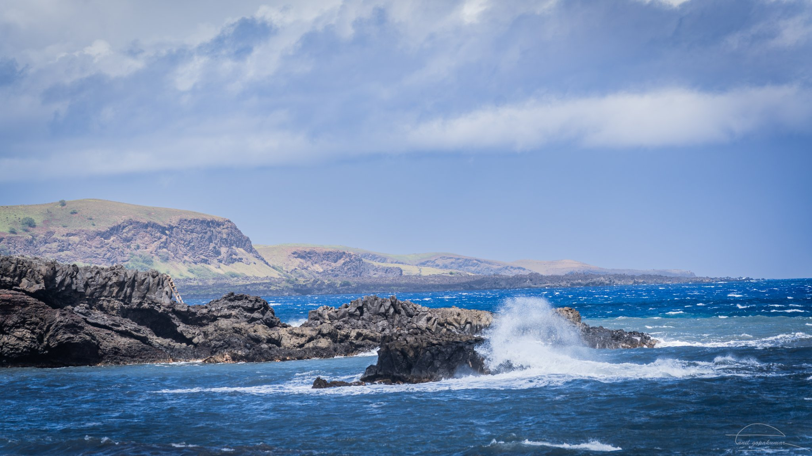
Navigating those tight, unshielded bends with nothing but a drop-off on one side was the ultimate test of focus. The pavement narrowed into a thin ribbon cutting across the barren, mountainous slopes of Haleakala. Our trusty rental car sat parked at the edge of the world during our brief breathers, looking out over the endless horizon.
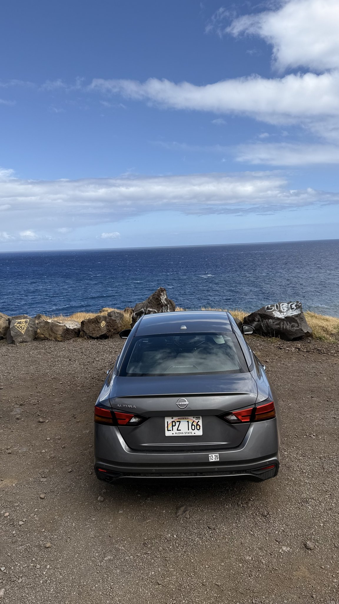
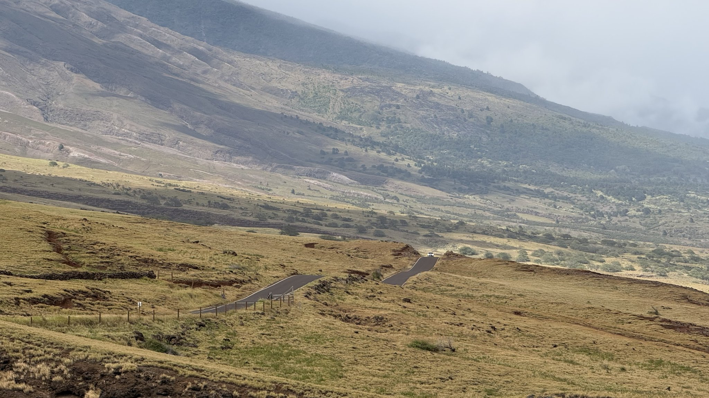
It was in those exact white-knuckle driving moments that the iconic Mohanlal line completely echoed in my head: > “Onnu angotto onnu ingotto thirinjal mathi, vandi thavidupodi aavum!” (One turn this way or that way, and the vehicle will be reduced to dust! — Vellanakalude Nadu)
While we deliberately chose to bypass some of the strenuous, muddy hikes that branch off the highway—opting instead to absorb the natural grandeur from the best lookouts—the journey itself felt like a grand adventure. By the time the drive wound down, we successfully made it to the coastal district of Haleakalā National Park in Kipahulu to see the Pools of 'Ohe'o.
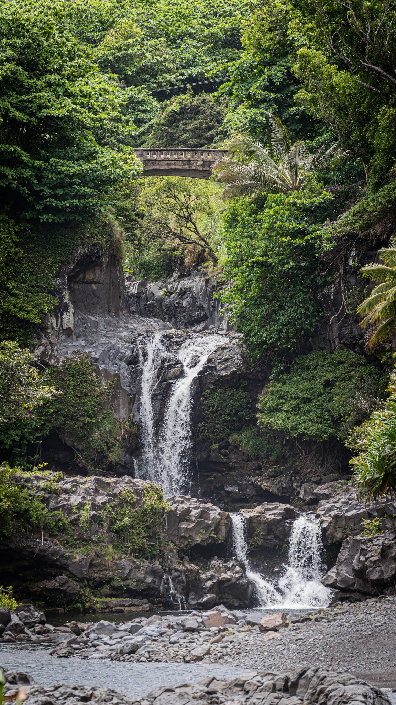
On the way back, we drove up the Kula Highway switchbacks and headed straight into Kihei, where we had an amazing dinner at Monsoon Bar & Grill. We ordered the Paneer Tikka Masala, Garlic Naan, and Aloo Paratha, which completely hit the spot after an intense day on the road. Our minds were completely saturated with the vibrant sights, sounds, and pure driving thrills of East Maui, and we finally returned to the Maui Beach Hotel for our second night.
Day 3: Alone Above the Clouds, Upcountry Breakfast, and Coastal Transition
Our third morning marked a major shift in strategy. Having narrowly missed out on securing the highly coveted Haleakala National Park sunrise tickets for two days straight, we refused to let the mountain win. At 7:00 AM sharp, we fired up the rental car and began the long, winding climb up the switchbacks, chasing the morning light up the volcano.
The drive up was eerie but spectacular. As we climbed higher, navigating tight curves wrapped in mountain mist, the road was completely deserted. We didn't pass a single vehicle heading down, nor did anyone appear in our rearview mirror. When we finally stepped out at the summit overlook around 8:30 AM, we were stunned. Despite all the immense global hype surrounding this peak, the summit was entirely empty. The early morning crowds had already vanished down the mountain, leaving the pristine, silent roof of the world completely to us.
The views up there were nothing short of staggering. It felt as though we had left Earth entirely. The summit rises peerlessly above the clouds, offering a panoramic look down onto an infinite, fluffy white blanket. Through the clear high-altitude air, we could trace the entire shape of Maui below, while the distinct silhouettes of neighboring Molokai, Lanai, and the distant peaks of the Big Island broke through the sea of clouds on the horizon.
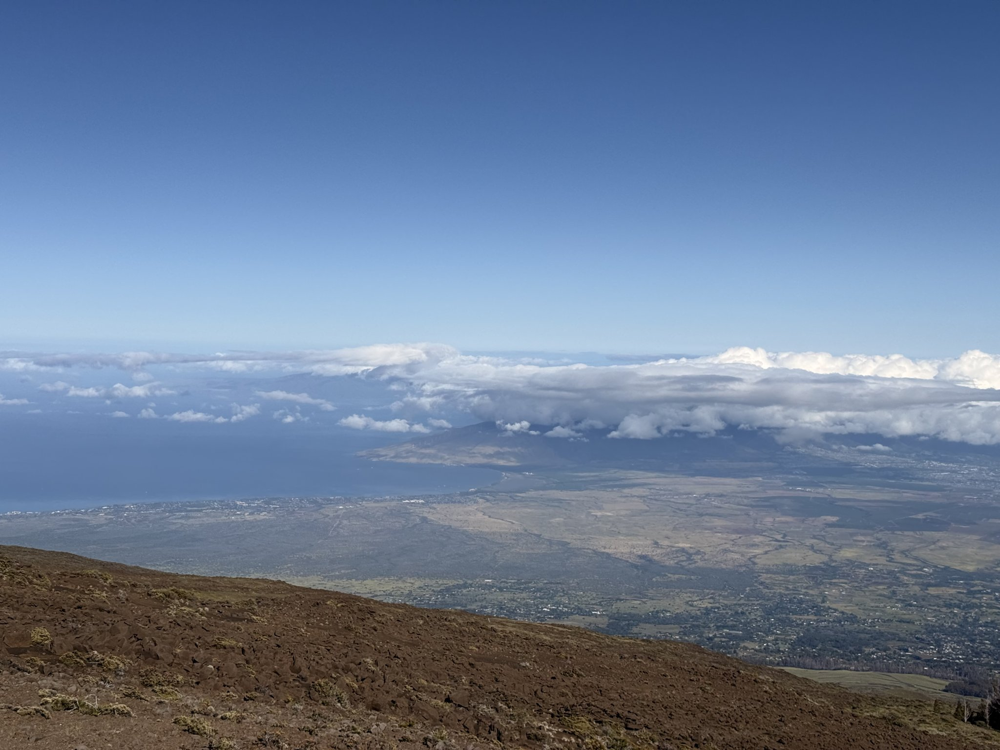
The massive volcanic basin stretched out for miles—a silent, breathtaking desert painted in deep shades of rust, charcoal, and ochre. The air was crisp, thin, and freezing cold, cutting sharply against our skin. Down inside the crater floor, ancient cinder cones rose from the old lava flows, their deep crimson slopes catching the brilliant morning sun.
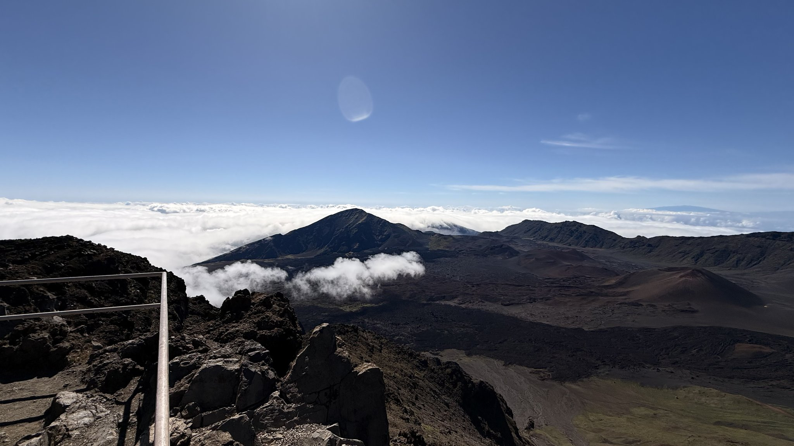
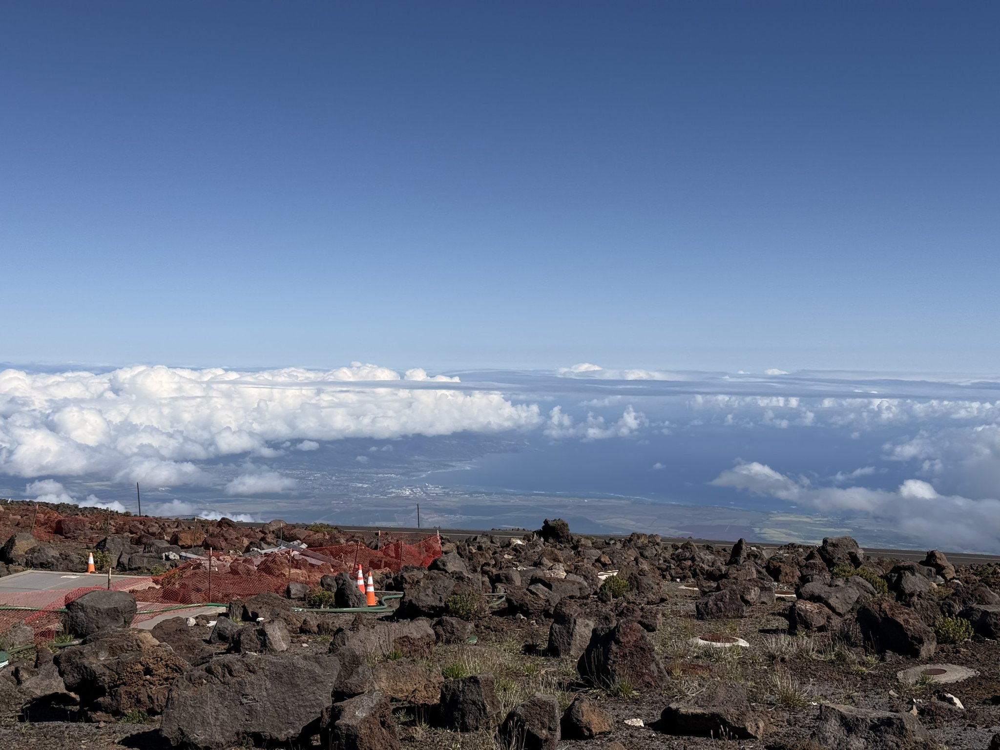
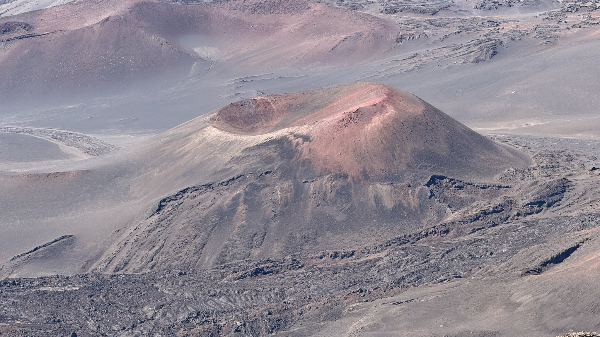
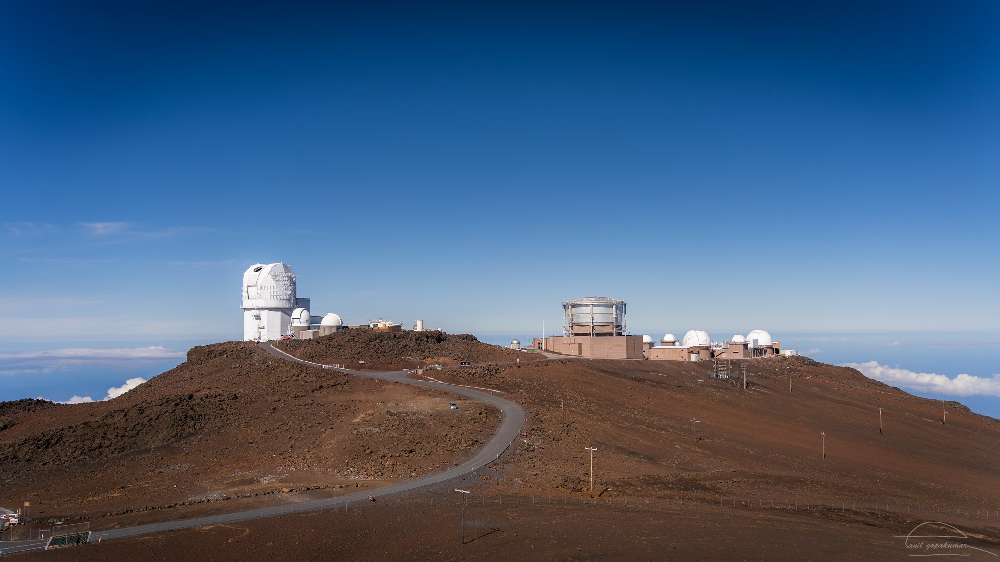
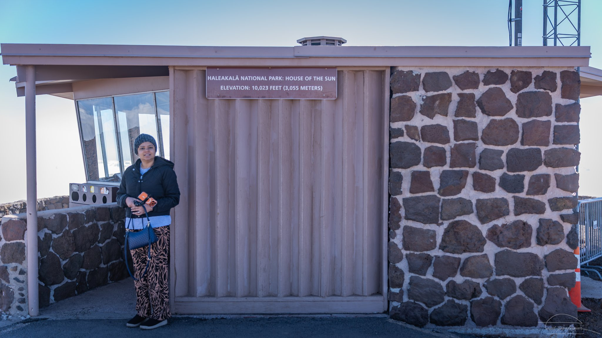
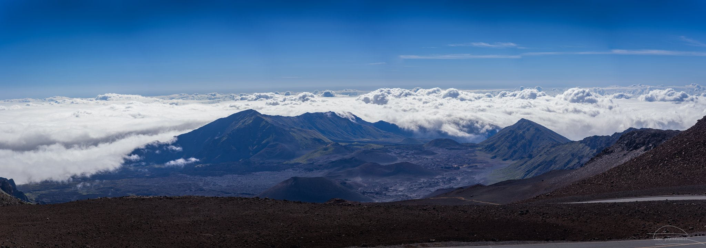
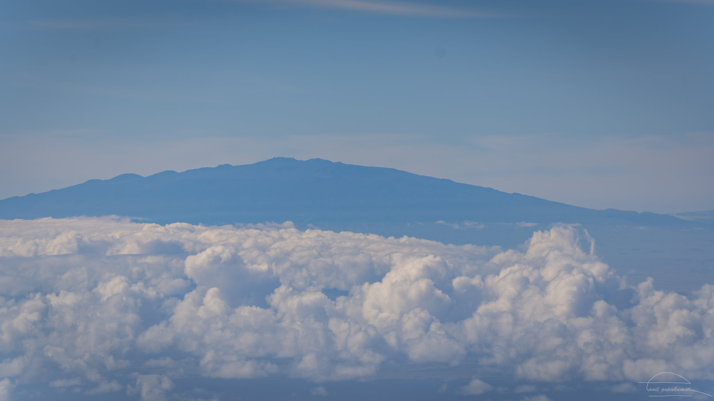
Wired on adrenaline and freezing from the summit air, we made our way back down the mountain slopes into Upcountry Maui, pulling into the charming, historic plantation town of Makawao for a well-deserved breakfast to thaw out.
With our bellies full, it was time to address a piece of unfinished logistical business. Armed with some realistic day-three perspective, we made a direct detour to the Kahului Costco to return the shiny new snorkel gear we had proudly bought on Day 1. After riding shotgun in our trunk for three days without touching a single drop of ocean water, we officially admitted defeat and closed the short-lived chapter of our snorkeling careers.
Freed from our chores, we pointed the car south toward our next base of operations: the Koheya Kai Hotel in Kihei. Arriving under the midday sun, the front desk informed us that it was still a bit too early for check-in. With time to spare, we headed straight over to Monsoon Bar & Grill to satisfy a craving for the rich, comforting flavors of home. Sitting down to a hearty, aromatic lunch spread, we feasted on perfectly spiced Kadai Paneer, warm, buttery Garlic Naan, and flaky Tandoori Parotta, capping it all off with a rich, velvety Mango Kulfi.
Since our hotel room was still being prepared after lunch, we grabbed our gear and headed down to the Kihei shore to kill the remaining hours on the sand. Stepping onto the beach, the coast was beautiful but clearly bearing the marks of the elements—thick tree roots completely exposed by heavy coastal erosion lined the upper shore while waves crashed in.
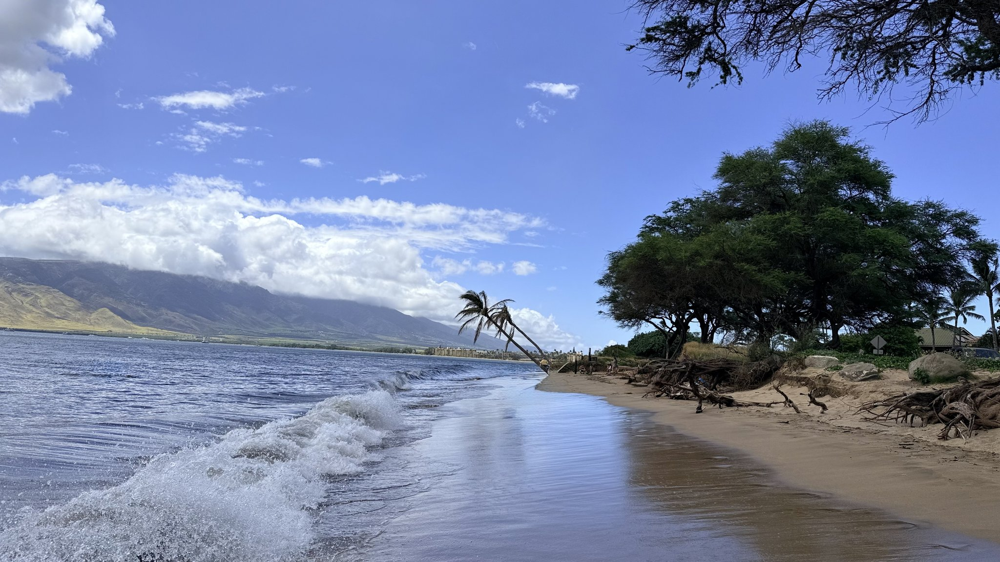
We walked along the shoreline together under a brilliant blue sky, enjoying the warm sand between our toes and taking in the panoramic views of the coast.
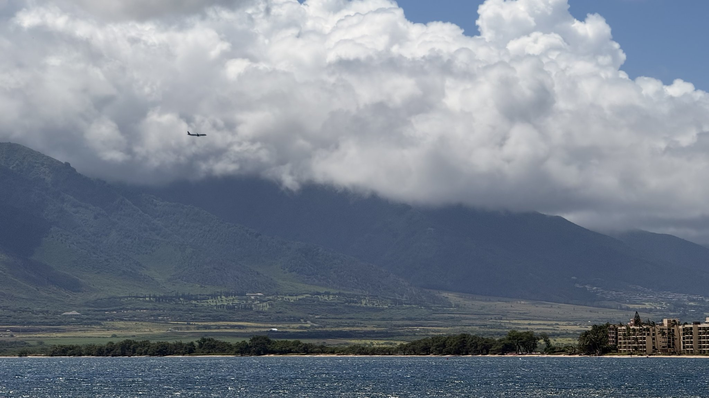
When we finally walked back to the hotel lobby to collect our keys, the minor wait turned out to be an absolute blessing in disguise. To make up for the communication timeline, the staff generously upgraded us to a stunning, spacious junior suite. We dropped our bags, unpacked, and spent some time relaxing.
By around 6:00 PM, the pull of the ocean was too strong to resist, so we decided to hit the beach once again. This time, we stepped onto the sand right in front of our hotel. It was an absolute paradise—completely clean, pristine, and beautifully uncrowded, with only a few other souls scattered across the shoreline. Taking advantage of the calm, wide-open airspace and the soft golden light, I launched the drone into the sky. The aerial perspectives were incredible, capturing the deep turquoise water gently lapping against the quiet sands from high above.
As the sun made its clean, brilliant descent into the Pacific, painting the horizon in quiet pastels, we watched the last of the light fade over the water. Knowing we had an incredibly early morning ahead of us to make it to Maalaea Harbor for our scheduled ocean snorkeling tour, we walked back to the hotel, unpacked, and decided to sleep early. The volcano trip was behind us; tomorrow, we were taking on the ocean.
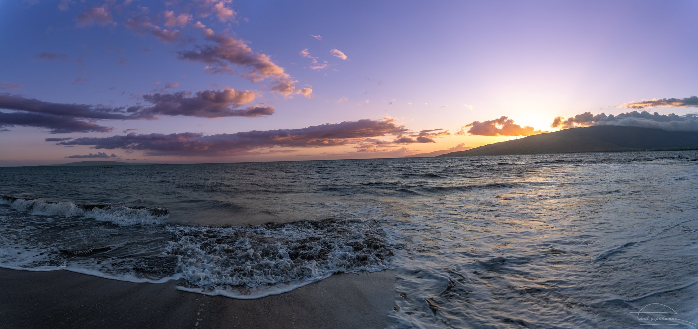
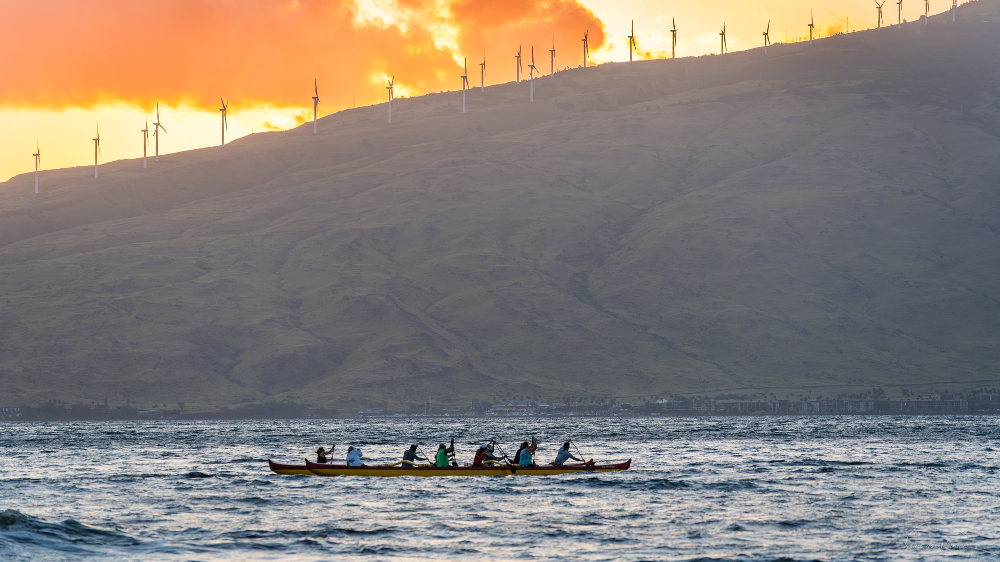
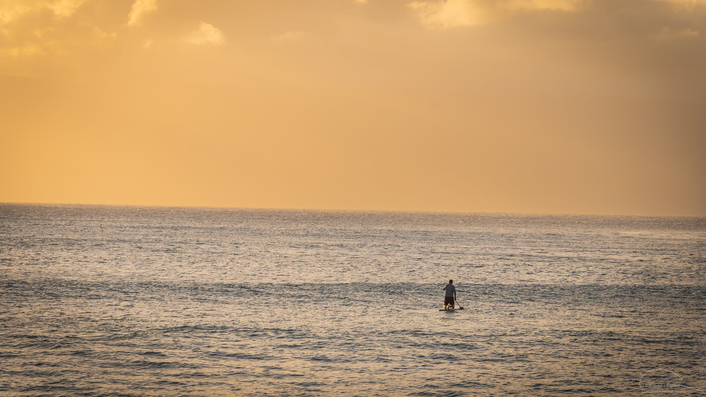
Day 4: Facing the Pacific — Nightmares, Catamarans, and the Molokini Plunge
The alarm went off at 4:20 AM, cutting through the dark quiet of our Kihei hotel room. Instantly, a heavy mixture of intense excitement and raw nerves filled the air. This morning was different. We weren’t driving up a solid mountain or cruising down a paved highway—we were heading out into the deep, unpredictable waters of the Pacific Ocean.
For Shweta, the stakes felt incredibly high. She is a non-swimmer, and to make matters worse, she had spent the previous night trapped in a vivid nightmare about drowning. For me, the anxiety was purely mechanical. I had never actually used snorkel gear in my life. Every video I had ever seen featured people submerging deep underwater, but a snorkel tube doesn't magically provide oxygen under the surface; it requires you to calmly float face-down on the waterline. The physics of it felt counterintuitive, and I wasn't entirely clear on how the rhythm of it would work once I was actually tossed into the sea.
Despite the nerves, we packed our gear and headed down to the lobby. The front desk attendant at the Kohea Kai gave us a welcome stroke of luck, telling us we were more than welcome to borrow the hotel's premium beach towels for the day as long as we brought them back after the tour. Happily wrapping the towels under our arms, we walked out to the car and made the smooth, dark 15-minute drive up the coast to Maalaea Harbor. We pulled into the port around 5:40 AM. Even at this ungodly hour, a small, bustling crowd of travelers was already forming a neat line along the docks, all of us waiting for the exact same thing.
Boarding the Pride of Maui
By 6:30 AM, the crew cleared us for boarding, and we stepped onto our vessel: the Pride of Maui. She was an absolute beast of a ship—a massive, 65-foot stable Maxi-Catamaran boasting a sprawling main deck, a glass-bottom viewing room, and a massive open-air bow. The tour was completely packed to capacity, a lively sea of colorful swim shirts, sun hats, and rustling gear bags.
Seeking the absolute best views of the open ocean, Shweta and I immediately bypassed the covered cabin and headed straight for the very front of the boat. To this day, I honestly do not know how Shweta manages to keep up with my wild itineraries. She suffers from severe motion sickness, yet there she was—swallowing her fears and standing proudly with me at the exposed bow of a massive catamaran, ready to take the waves head-on.
Before the twin engines fired up, the crew laid out a massive morning breakfast spread packed with fresh tropical fruits, assorted muffins, and sweet buns. Because of her intense fear of getting seasick on the open water, Shweta initially refused to touch a single plate. I, on the other hand, grabbed a little bit of everything. Right in the center of my plate sat a giant, golden Costco Danish pastry—that perfect, circular baked bun with a rich, sweet cream cheese and jelly center. It looked so completely delicious under the morning sun that Shweta’s resolve instantly crumbled. Seeing it on my plate, she couldn't help herself; she dug right in and shared it with me. It was the ultimate comfort fuel before the storm.
At 6:50 AM, the catamaran's heavy diesel engines roared to life, and we officially cast off from the port. Just as we were clearing the harbor walls, we had to execute a brief tactical pause—a passenger from an entirely different tour boat was running late, and the manifest had been shifted for them to join our cruise instead. With our final passenger secure, we pointed the bow toward the open ocean. It wasn't an exceptionally windy morning, but the Pacific swells were incredibly strong, sending deep, rolling waves crashing against the hull. The boat pitched and swayed violently, but Shweta held her ground beautifully, gripping the railing and conquering both her motion sickness and her nerves as the Maui coastline slowly shrank behind us.
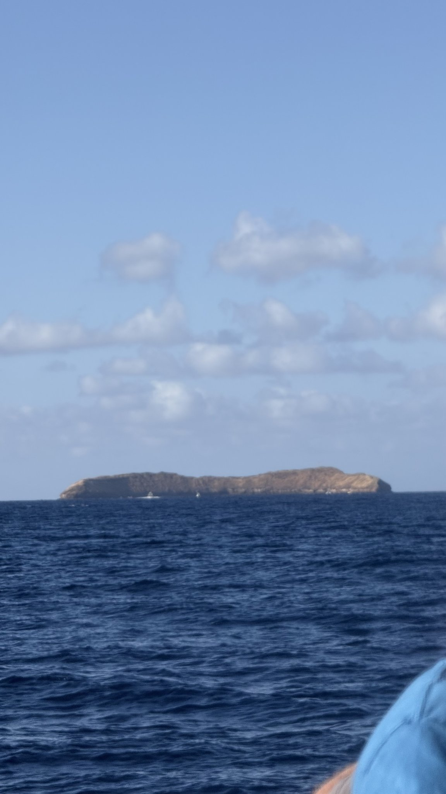
The Crescent Wall of Molokini
By around 8:00 AM, the catamaran slowed to a crawl, and the dramatic, crescent-shaped rock wall of the Molokini Crater loomed up out of the deep blue water. It was magnificent—an ancient, submerged volcanic caldera rising out of the ocean like a fortress, shielding a pristine, crystal-clear marine sanctuary within its curved arms.
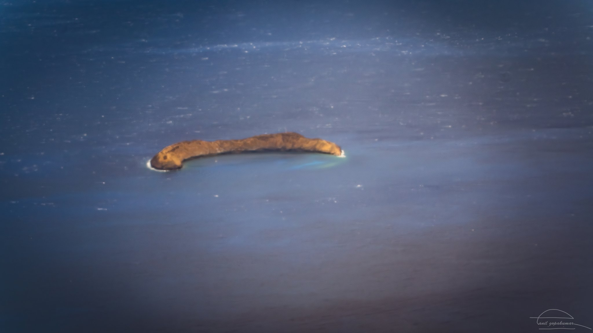
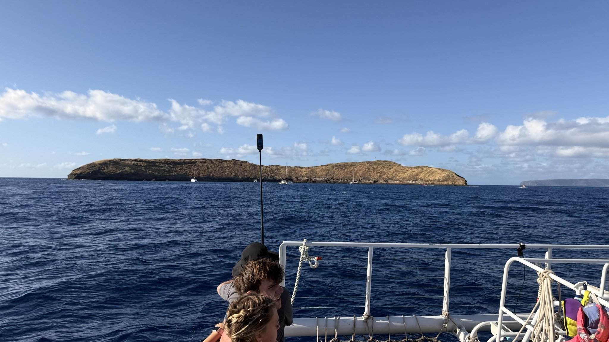
Before anyone was allowed near the water, the seasoned boat crew gathered everyone on deck for an intensive masterclass on ocean survival and snorkeling mechanics. They broke down the gear with absolute precision:
- The Mask: How to clear any stray hairs away, press the silicone skirt firmly against your face, and pull the strap tight enough to create a flawless, airtight seal over your eyes and nose.
- The Snorkel: How to bite down comfortably on the rubber mouthpiece, seal your lips to prevent saltwater entry, and use a sharp, forceful blast of air to purge the tube if a wave sloshes over the top.
- The Fins: The proper technique for walking backward on the boat deck to avoid tripping, and how to execute slow, fluid, straight-legged kicks from the hips rather than bending your knees.
- The Hand Signals: The universal vocabulary of the ocean. A fist tapped repeatedly on top of your head meant *"I am totally OK,"* while a frantic waving of the arms meant *"I need assistance from a lifeguard immediately."*
Finally, the instructions wrapped up. It was time to roll. The seasoned snorkelers on board immediately began giant-striding off the side platforms, plunging dramatically into the water. As a complete first-timer looking down into the sheer, bottomless depth of the Pacific Ocean, I chose a much more conservative approach. I bypassed the ledge and walked toward the submerged stairs.
As I took my first cautious step downward and lowered my leg into the water, a wave of relief washed over me. The water temperature was absolutely perfect—not too cold, not too hot, just a flawless, refreshing embrace. I took a deep breath, stepped off the bottom rung, and let myself slide completely into the open ocean.
The instant my body fully submerged, a sudden jolt of primal fear hit me. Because the heavy rubber snorkel mask completely covers your nose, my brain instantly went into a panic. I am a creature of habit, entirely used to breathing out of my nose, and suddenly that channel was completely blocked off. My lungs seized up for a split second, and the sheer scale of the water beneath me felt overwhelming. I bobbed to the surface, treaded water, and took a mental step back. Stop, I told myself. Relax. I reminded myself of the crew’s instructions: close your nose off completely, use your mouth, and just breathe slowly through the tube. I adjusted the strap, let my body go completely limp against the buoyancy of the water, and lowered my face back down into the sea.
The Siren Song of the Reef and Shweta’s Battle
I lost myself in the underwater world of Molokini for a solid thirty minutes, suspended in a silent universe of neon yellow tangs, vivid coral shelves, and infinite blue depths. But eventually, the husband instincts kicked in. I poked my head above the rolling surface, blinked the saltwater from my goggles, and swam back toward the catamaran to see how Shweta was holding up.
When I reached the stern, my heart sank a little. She was still trapped in a grueling battle with her nerves, desperately clinging to the metal rungs of the step ladder. She was fully equipped for survival—wearing a high-buoyancy flotation belt and gripping a bright pool noodle—but the sheer, fathomless depth of the open Pacific was refusing to let her mind relax and enjoy the ride. After a brave, exhausting effort to face her fears, she ultimately decided to give up and climb back onto the safety of the dry deck.
With Shweta safely out of the water, I turned right back around and swam out for round two. This time, emboldened by my first half-hour of experience, I pushed further out, gliding right up to the very edge of the volcanic crater wall. The water grew shallower, and the coral structures loomed so massive and close beneath me that a sudden flash of panic hit—I felt like a stray kick of my fins might actually strike the fragile reef.
Strangely, a conversation from earlier that morning flashed through my mind. While waiting at the harbor, we had befriended a lovely Indian mother from Ahmedabad who was traveling with her two daughters to celebrate one of their graduations. She had casually mentioned that her husband was missing the tour because he had brutally injured himself the previous day while surfing at a nearby bay. Standing over that razor-sharp volcanic reef, her warning echoed in my head. I took it as a sign from the universe, immediately altered my course, and safely backpedaled into deeper waters. I squeezed every last drop of joy out of the crater for another twenty minutes until the ship’s horn echoed across the bay. The crew was calling everyone back. We had spent a glorious, unforgettable hour at the roof of the crater, but the Pride of Maui was ready to hunt for giants.
Leap of Faith at Turtle Town
We scrambled back on board, the twin diesel engines roared to life, and we commenced a smooth, 40-minute cruise toward our second destination: the famous Turtle Town along the Maluaka coastline. My adrenaline was redlining. I couldn't wait to get into the water and see a sea turtle in the wild. Because federal marine laws strictly protect these ancient creatures, our captain anchored the massive catamaran about 100 meters away from the actual shoreline to give the wildlife their space.
The crew gathered us at the railing for a fast, high-stakes briefing:
- "The turtles are lounging right between the two prominent reefs you can see from the deck."
- "Do not get too close to the coral, and you are strictly unauthorized to touch the land."
- "Never, under any circumstances, touch a turtle. The oils and bacteria on human skin can cause severe, infectious tumors on them, and the wild bacteria they carry can make you incredibly sick."
- "Turtles spend most of their time resting on the ocean floor, but they have to surface to breathe. Never block their vertical path to the air, and absolutely do not try to ride them."
The second the briefing ended, the crowd bottlenecked at the stairs. I looked at the long, slow-moving line, looked at the open ocean, and decided I was done playing it safe. I completely bypassed the ladder, lined myself up at the side railing of the ship, and launched myself straight into the Pacific.
It was a glorious jump—right up until I hit the water and realized I had left the snorkel tube clamped firmly in my mouth. As I plunged deep under the surface, the open tube instantly flooded with an aggressive rush of cold saltwater. Fortunately, my technical brain didn't panic. I remembered the core lesson from the morning masterclass. The moment my head broke the surface, I gathered my breath and let out a sharp, violent, locomotive blast of air through my mouth. The trapped water exploded out of the purge valve like a fountain, the tube cleared completely, and I was good to go.
I had a grueling 100-meter sprint ahead of me to reach the reef. Having long swimming fins strapped to my feet gave me incredible propulsion, but executing a proper forward stroke while keeping my heavy GoPro steady in one hand turned the swim into a serious physical workout.
The Underwater Waltz
When I finally crossed the boundary into the reef section, the water was buzzing with activity. Snorkelers from a few other tour boats had converged on the area, turning the water into a crowded, floating stadium. But right beneath the chaos, the magic happened.
We spotted two magnificent Green Sea Turtles. One was an absolute giant, completely motionless and dead asleep on the sandy ocean floor. The second turtle was noticeably smaller, gliding through the currents with effortless grace. Suddenly, the smaller turtle swam directly down to the bottom and gave the sleeping giant a deliberate, heavy shove. The big turtle woke up with a start, shook off its lethargy, and began to lift off the ocean bed. Because of the massive crowd of snorkelers floating directly above it, the giant turtle looked up, patiently scanning the surface for an open pocket of space where it could safely break the waterline for air. It spotted an opening, steered its flippers, and rose directly to the top—stopping right in front of my face.
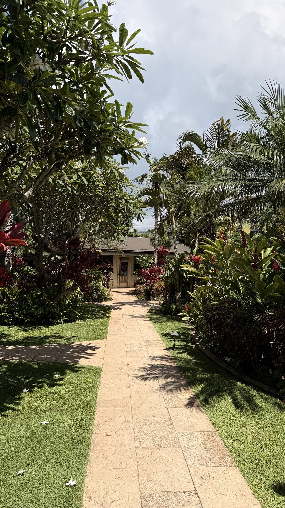
It was a breathless, spiritual moment. I quietly drifted backward, keeping a respectful, safe distance, and began following behind the giant turtle as it glided forward. I was so completely mesmerized by the ancient rhythm of its flippers that the entire world faded away.
Eventually, I blinked and looked around. The massive crowd of tourists was gone. I had swum so far following this turtle that I had completely separated myself from the group. The only other person anywhere near me was a girl who was also deeply locked in her own world, filming the turtle on her GoPro. We looked down and realized we were drifting dangerously close to a shallow, jagged wall of living coral. Realizing we had pushed our luck far enough, we exchanged a look, gave the turtle its space, and turned back toward the ship.
On my grueling swim back across the open water, Maui handed me one final, parting gift. Glancing down at a deep, isolated section of the ocean floor, I spotted a hidden sanctuary where four or five massive turtles were just laying around together in the sand like ancient stones. It was a staggering sight. But my lungs were burning, my arms were tired, and I still had to conquer the final leg of the 100-meter swim back to the catamaran. I dug my fins into the water, pushed through the fatigue, and finally reached the metal ladder of the Pride of Maui. Shweta was waiting on deck, having wisely skipped the intense long-distance swim to relax in the sun.
High-Calorie Victory
I climbed on board, rinsed the crusty salt from my skin, and aggressively rubbed myself down with the towels. The physical exertion had left me completely ravenous. Right on cue, the crew opened up the lunch galley.
They were serving massive, hearty deli sandwiches packed with cheese and fresh ingredients. I grabbed a delicious, savory Tuscan-style veggie sandwich stacked with melted cheese, while Shweta happily dove into a perfectly seasoned Falafel wrap. Both were served a bit cold—clearly sourced from a fresh morning Costco haul—but after battling the Pacific currents for two hours, they tasted like absolute Michelin-star cuisine. We washed it all down with the leftover morning sweet buns and a couple of ice-cold cans of Ginger Ale and Coke, sitting together on the sun-drenched deck as the catamaran made its triumphant return journey. By 11:30 AM, the ship glided smoothly back into the slips of Maalaea Harbor. We stepped back onto the solid, warm asphalt of the pier, sun-baked, completely exhausted, and profoundly changed by the world beneath the waves.
The Mid-Day Drift to the North Coast
Stepping off the catamaran and back onto the solid, warm concrete of Maalaea Harbor, we loaded our gear into the car and made a quick, necessary detour back to the Kohea Kai Hotel to return the beach towels we had happily utilized all morning.
Our destination for the second half of our island adventure lay on the complete opposite side of Maui: The Mauian Boutique Hotel, nestled right along the pristine, crescent-shaped shores of Napili Bay. The trek up the scenic Honoapiilani Highway was a beautiful, smooth one-hour drive, watching the rugged West Maui mountains rise sharply on our right while the glistening blue channels of the Pacific tracked alongside us on our left.
Since our check-in at the new resort wasn't until 3:00 PM and we had plenty of time to burn, we decided to make an intentional pitstop at Indian Grill N Curry along our route. Stepping out of the midday heat, we ordered a vibrant Samosa Chaat and an aromatic Veggie Biryani. Sitting together in the relaxed shade, we happily polished off the crisp, tangy Samosa Chaat on the spot. Since our boat lunch was still holding strong, we carefully packed up the massive container of Veggie Biryani, tucking it away to serve as the perfect, hassle-free dinner for later.
Stepping Into Old Hawaii
We pulled under the canopy of The Mauian around 2:15 PM, a bit ahead of schedule. The check-in process here was incredibly smooth and welcoming. Instead of making us wait around for the strict clock to hit three, the front desk agent immediately checked to see if our allotted room had already been cleaned. To our relief, it was entirely ready, and they handed over our keys without hesitation.
Before booking, we had done our homework and read a few candid reviews warning that the rooms lacked televisions and that the walls were a bit on the thin side. But stepping onto the property, those minor quirks didn't matter at all. We instantly fell in love with the place. The entire resort was enveloped in a stunning, manicured garden bursting with lush tropical greenery and vibrant, blooming flowers that made the air smell incredible. The room itself was remarkably clean and comfortable—and as advertised, completely devoid of a flashing TV screen. It felt wonderfully unplugged.
Conquering the Shorebreak of Napili
The hotel sat directly on the beachfront, looking out over a spectacular stretch of sand that felt almost entirely private, shared only with a small handful of neighboring low-rise resorts. The staff happily supplied us with our own dedicated beach towels and sturdy beach chairs, and we headed straight down to the shoreline.
Even though we were already exhausted from the morning's adventures, the sheer beauty of the water was a siren song. We dropped our chairs and waded into the surf. Napili Bay immediately showed us its wild side—the shorebreak waves were incredibly strong, and the underlying current had a serious pull. The geography of the beach was fascinating: it dropped off precipitously into deep water after a mere ten steps from the dry sand. We body-surfed and battled the rolling waves for an exhilarating thirty minutes before retreating to our lounge chairs to dry off under the blazing Hawaiian sun. The heat outside was intense, radiating off the white sand to the point where we could practically feel our skin cooking.
At that point, the physical toll of our 4:20 AM wake-up call, the open-ocean navigation, and the morning's grueling 100-meter swims finally caught up with me. I was ready for a hot shower and a dark room. But the absolute highlight of the afternoon was Shweta. After spending the entire previous night trapped in a literal nightmare about drowning, and fighting her nerves at the Molokini ladder, the magic of Napili completely transformed her. While I admitted defeat and headed back to the room to escape the burning sun, Shweta proudly turned right back around and walked back out into the surf, completely solo, to spend a little more time floating and enjoying the ocean on her own terms. It was an incredible, triumphant full-circle moment for her day.
Back in the room, I washed away the layers of Pacific salt, rinsed off the fatigue, and crawled under the sheets. Between the endless miles of driving, the deep-sea currents of the crater, and the heavy afternoon heat of Napili Bay, my body was entirely spent. I collapsed into a deep, uninterrupted sleep—easily the absolute best, most restorative rest of the entire trip.
A Silent Symphony at Dusk
By around 6:30 PM, the heavy, ocean-induced nap had worked its magic, and we decided to shake off the final bits of sleepiness and head back down onto the sand. The transformation of Napili Bay was stunning. The blinding, high-noon heat had dissolved into a soft, cool evening twilight, and the daytime crowds had reduced significantly. The bustling beach had cleared out completely, leaving only a scattered six or seven people across the entire crescent shoreline.
We sat down near the edge of the water. There were no radios, no loud chatter, and no distractions—just the deep, rhythmic sound of the heavy shorebreak waves playing beautifully in the background. The clouds on the horizon caught the final rays of the sun, bleeding into an absolute masterpiece of deep amber, violet, and soft pink over the quiet Pacific. Watching that clean, peaceful sunset together from our little corner of the sand felt like the ultimate reward for a day built entirely on facing down deep-water fears.
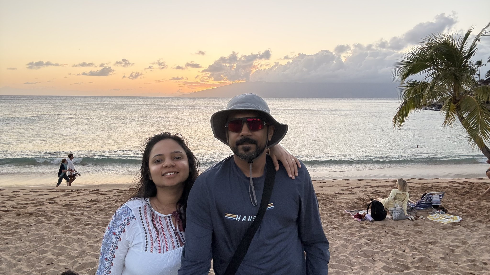
As the last lines of light slipped beneath the horizon, we collected our chairs and walked back past the blooming gardens toward our room. But before turning in to crack open our leftover container of Veggie Biryani, we decided to take a quiet stroll around the resort grounds to see how the landscape transformed after dark. The nighttime decor around the boutique hotel was incredibly charming—soft, warm accent lights illuminated the garden pathways, casting long, dramatic shadows through the palm fronds and catching the vibrant petals of the night-blooming tropical flowers. It felt like a hidden oasis.
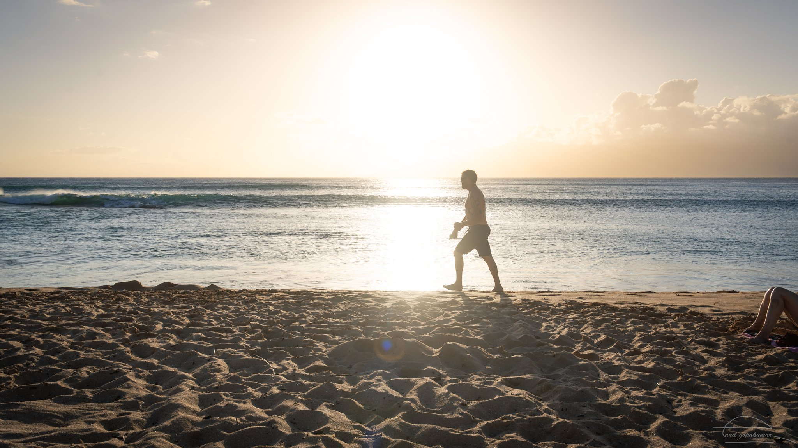
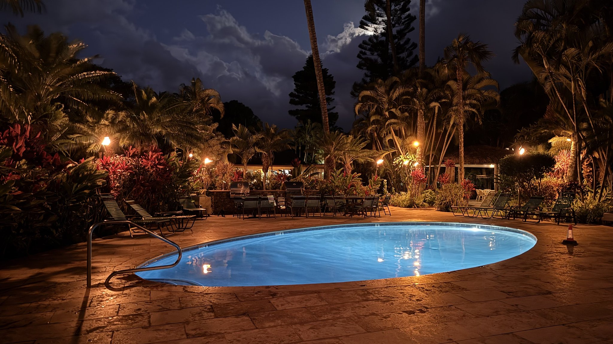
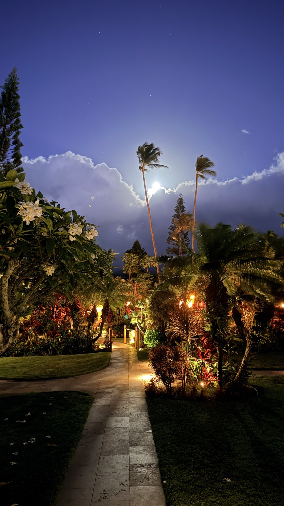
After capturing a few peaceful shots of the property under the lights, we finally headed back inside to finish up our dinner. As I climbed into bed, I felt a distinct wave of anxiety. I am someone who simply cannot sleep well if there is absolute silence; I need the familiar ambient sound of a TV playing in the background to help my brain switch off. Knowing upfront that our room was completely devoid of a television, I was fully bracing myself for a long, restless night of tossing and turning.
Instead, the island handed me a beautiful surprise. Backed by the deep, rhythmic white noise of the heavy Napili waves crashing right outside our walls, I fell into an incredibly deep, undisturbed slumber. When I woke up the next morning and synced my Apple Watch, the metrics were staggering: it recorded a massive 8 hours of deep sleep, completely shattering the strict 6-hour average I had been running on for the entire trip so far. The open ocean had completely drained us, and Napili Bay provided the ultimate sanctuary to recover.
Day 5: The First Seat at Dawn, Tropical Butter, the Edge of the Trail, and the Trans-Island Leap
The final day on the island arrived with a gentle, slow-moving rhythm. We had absolutely nothing concrete checked onto our itinerary for the morning—our only hard deadline was to check out, point the car back toward Kahului, and catch our evening flight off the island.
Yet, despite having the perfect excuse to lounge around in our television-free sanctuary, the deep, restorative magic of that 8-hour sleep worked its way through us. Both Shweta and I blinked awake early, completely refreshed. By 7:00 AM sharp, as the morning sun began to filter through the palm trees, we walked down to the open-air pavilion. We were the absolute first guests to arrive for the hotel's breakfast spread.
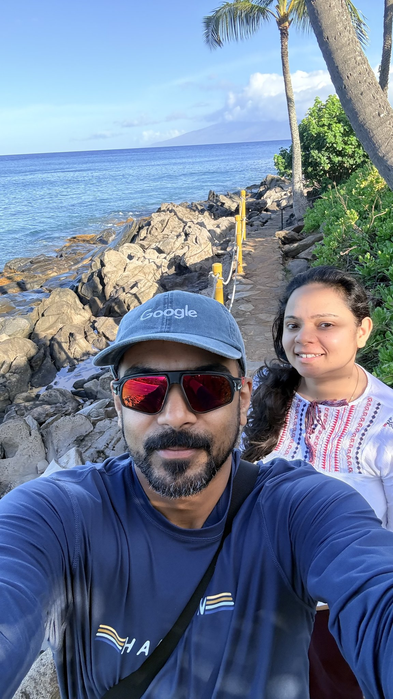
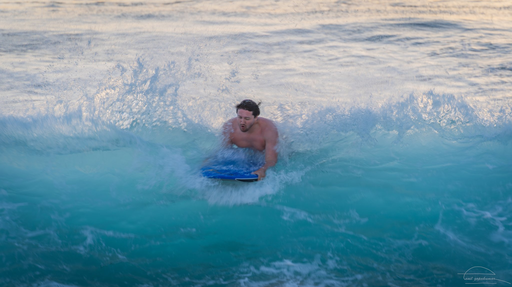
It was a beautifully simple, lean continental breakfast, but every single ingredient tasted like an absolute luxury. The counter was stacked with freshly baked, pillowy Hawaiian sweet buns, an assortment of tropical fruits including papayas and oranges that tasted out-of-this-world sweet, and slices of crisp pineapple.
But the undisputed star of the morning was the butter. I don't know what secret island recipe they used—it had a rich, creamy, slightly sweet tropical note, likely a whipped Macadamia nut or Lilikoi (Passion Fruit) butter—but it was easily the best-tasting butter I have ever had in my life. Because it was so incredibly good, my portion control completely flew out the window; I couldn't stop at just one bun. I kept pairing it with warm rolls, going back for more, while we washed everything down with a unique, ice-cold violet-colored tropical juice that tasted like a rich Acai-Berry blend.
Gliding Over the Kapalua Coastal Trail
We stretched our breakfast out for a peaceful 45 minutes, soaking in the quiet morning air, before deciding to head out for one last coastal exploration. Just a short hop from our property lay the entry point to the spectacular Kapalua Coastal Trail.
Stepping onto the pathway around 8:00 AM, the entire bay area was already bustling with morning energy. The ocean was dotted with local surfers waiting out on the swells, and eager snorkelers wading out into the coves with their gear strapped tight, scanning the shallows for tropical fish and hidden sea turtles.
The peerless clarity of the water from the trail was absolutely mind-blowing. As the path climbed along the rugged volcanic cliffs, we could stand on a ledge 50 feet away and look straight down through the turquoise surface, seeing all the way to the sandy floor and the dark coral formations below. It felt like looking through glass.
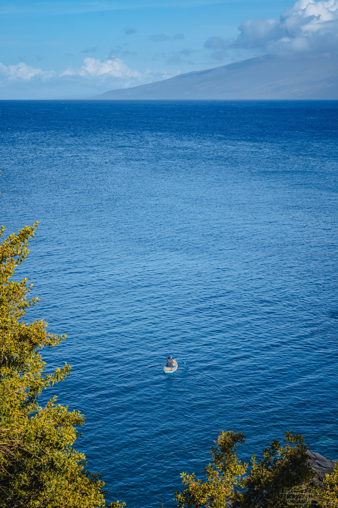
We walked the winding trail for about a mile, breathing in the salty breeze and committing the stunning vistas of the West Maui coastline to memory. By the time we looped back, the clock was creeping toward mid-morning. We returned to our room, swept up our gear, packed the bags, and tucked our luggage into the trunk. By 9:31 AM, we walked up to the front desk and officially checked out of that beautiful, garden-wrapped boutique paradise.
A Deep Dive at the Maui Ocean Center
With our evening flight scheduled for 4:21 PM, we found ourselves with a massive window of open time to kill. Shweta came up with the absolute perfect audible: a visit to the renowned Maui Ocean Center, which was situated directly on our driving route back toward the airport.
Leaving the north coast behind, we made the smooth drive and pulled into the ocean center right on schedule by 10:20 AM. It turned out to be a spectacular way to spend the middle of the day. The exhibits were breathtakingly immersive, putting us face-to-face with an incredible array of indigenous Hawaiian marine life.
We wandered through the stunning 360-degree acrylic tunnel of the Open Ocean exhibit, completely surrounded by deep-sea predators gliding effortlessly through the water. We marveled at massive Sandbar Sharks, sleek Gray Reef Sharks, fast-moving Blacktip Reef Sharks, and a magnificent Tiger Shark, alongside giant, soaring Hawaiian Broad Stingrays (known locally as Lupe). The smaller tanks were a riot of color, teeming with vibrant Surgeonfish, Triggerfish, Angelfish, and neon Hawaiian Cleaner Wrasses darting through thriving coral heads.
Before leaving, we caught the center's highly praised 3D theater documentary about Humpback Whales. It was an incredibly moving, visually stunning look into the lives, migrations, and complex songs of the gentle giants that call these Hawaiian channels home. It gave us a profound appreciation for the massive ecosystem we had spent the week exploring.
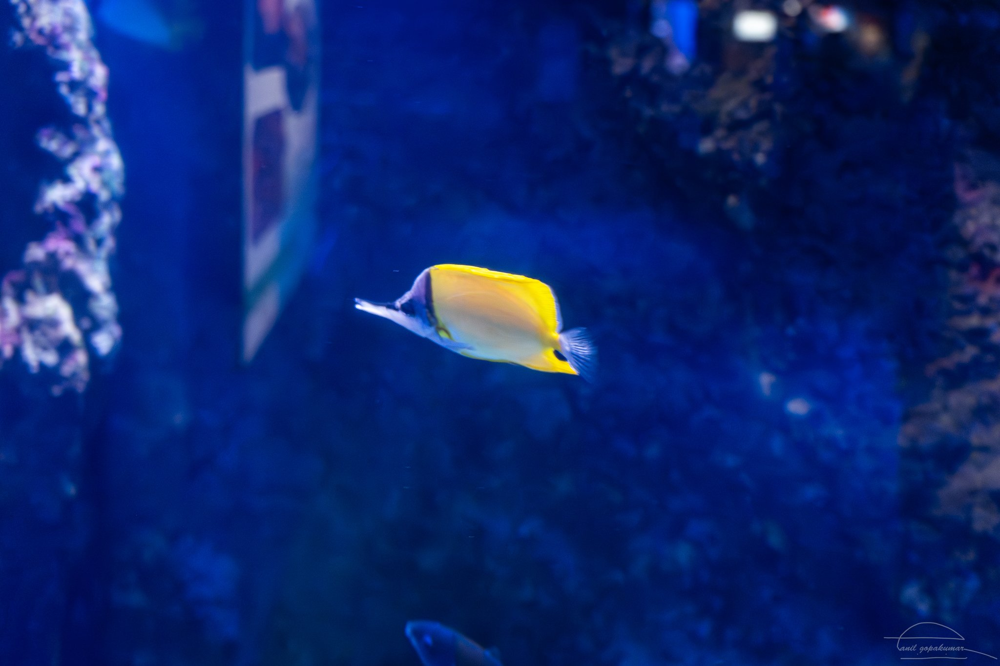
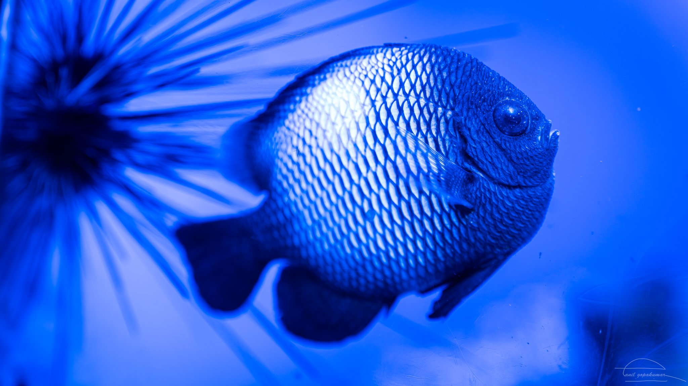
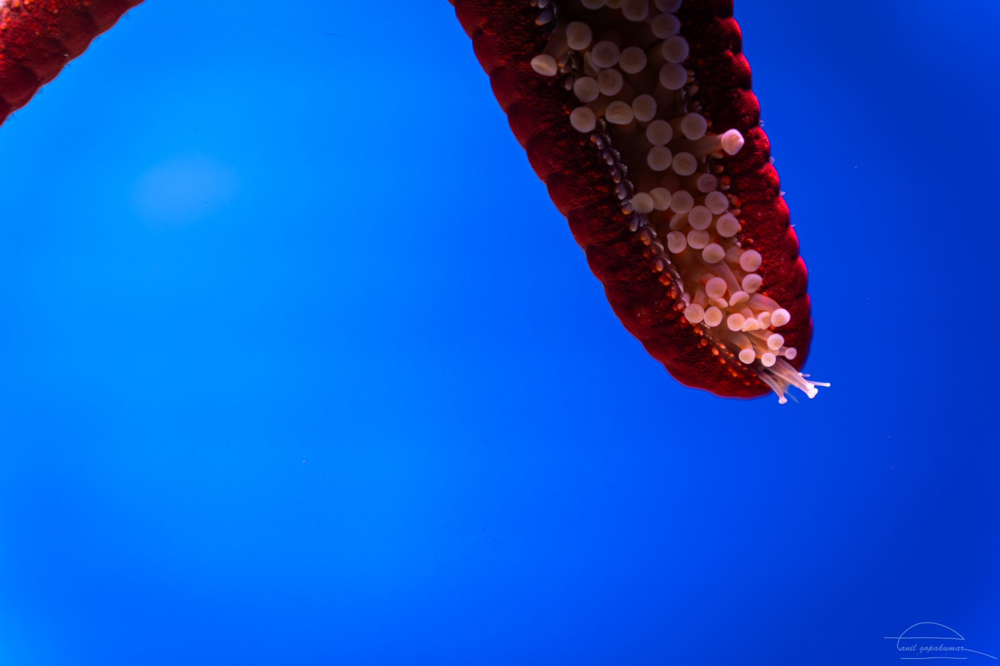
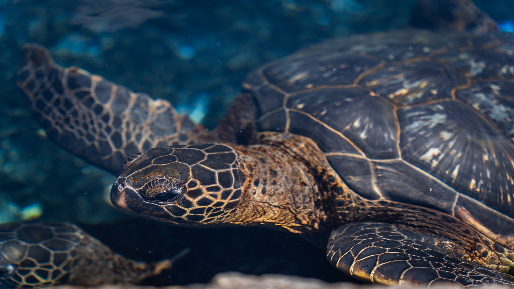
Stone-Fired Fuel and Final Check-Ins
By 12:35 PM, we stepped out of the aquarium and into the bright midday sun. Conveniently located just steps away near the harbor sat Point Break Pizza & Panini, a spot widely raved about as one of the absolute top-rated pizza shops on the island.
The aroma of wood smoke and slow-fermented dough pulled us right through the door. Utilizing their signature 72-hour slow-rise artisanal dough, we ordered a side of their incredibly popular Cheesy Focaccia along with a massive slice of Cheese Pizza. The quality was outstanding. Cooked to absolute perfection in a blazing stone-fire oven, the crust was beautifully light, airy, and crisp, with a rich, smoky depth that made every bite incredible. It was a remarkably hearty, comforting final meal on the island.
The Final Return and the Great Relief
Completely satisfied and stuffed, we climbed back into the car for the final logistical legs of the trip. We made a swift B-line to the Kahului Costco to fill up the gas tank of our rental vehicle, but as we drove toward the airport depot, a lingering wave of anxiety started to creep in.
The previous evening, the Indian lady we met from Ahmedabad had given us a serious reality check. She mentioned that many rental car companies strictly forbid you from driving the rugged, unshielded back-road route past Hana. She warned that if they found out you took their car back there, they could slap you with massive penalties—and because that remote stretch has absolutely zero cellular network, any towing or emergency charges if something went wrong would have to be covered entirely out of our own pockets. Recalling how white-knuckle and intense that cliffside drive actually was, Shweta and I were genuinely worried that Thrifty was going to hold our security deposit or inspect the car's undercarriage for volcanic dust.
But after all that building worry, the actual return process was a complete breeze. The attendant didn't ask a single complicated question. They simply looked over, asked if everything was okay with the vehicle, and I confidently said, "Yes!" That was it. They did a quick, standard walk-around inspection, verified everything was in pristine condition, and instantly released the hold on our credit card.
With the final logistical hurdle cleared and the weight completely lifted off our shoulders, we grabbed our bags and walked swiftly toward the airport terminal.
The Trans-Island Leap — Points, Passes, and a Skyline Welcome
By 1:40 PM, we had successfully cleared the rental depot and stepped into the terminal at Kahului Airport (OGG). Our flight to Oahu wasn't scheduled to board until 4:21 PM, but thanks to a calculated credit card rewards strategy, the three-hour wait was anything but a chore. We bypassed the crowded boarding gates and headed straight into the airport lounge. We spent the afternoon relaxing in comfort, enjoying a steady stream of complimentary premium snacks and refreshing drinks while watching the planes taxi across the tarmac. The layout couldn't have been more convenient—our departure gate was positioned directly outside the lounge doors. At 4:05 PM, we casually stepped out, walked onto our plane, and prepared for the quick hop across the channel.
Navigating the HNL Transit Network
Our wheels touched down at Daniel K. Inouye International Airport (HNL) right on time at 5:35 PM. While most tourists immediately sprinted toward the rental car counters or expensive rideshare lanes, we had a completely different blueprint for Oahu. We had committed to an ultra-optimized transit-only plan, leveraging Honolulu’s transit infrastructure.
We followed the directional signs up to Terminal 2, crossed the pedestrian bridge, and walked directly into the sleek, elevated Lelepaua Skyline Station—Honolulu's state-of-the-art driverless skytrain network. We tapped the automated kiosk, purchased our 3-day transit passes loaded onto local HOLO cards, which flawlessly covered unlimited rides across both the Skytrain and the island’s expansive bus network. Passes in hand, we made our way down to the ground level transit stalls to catch the W Line bus. It was a flawlessly timed transfer. The city bus pulled up to whisk us away, cutting through the early evening traffic, bypassing downtown, and delivering us straight into the heart of the bustling Waikiki strip.
Sinking into Waikiki Luxury
From the bus stop, it was just a short, scenic walk down the palm-lined sidewalk to the towering entrance of the Hyatt Regency Waikiki Beach Resort & Spa. Standing in the grand atrium, checking into a world-class resort like this felt uniquely sweet. Nominally, a beachfront stay of this caliber commands a staggering cash price per night, but because we had spent months strategically saving and transferring our credit card miles and points specifically for a milestone trip like this, the entire luxury booking cost us absolutely nothing out of pocket. It was a pure rewards victory.
When the front desk handed over our keys, we headed up the elevator to our high-floor room. Technically, the booking was classified as a Waikiki City View room rather than a direct ocean-front suite, but the moment we threw open the curtains, our jaws hit the floor. The view from our balcony was absolutely insane. Far from just looking at buildings, we were treated to a sprawling, high-altitude tapestry of the vibrant Honolulu city lights, the dramatic ridges of the Koʻolau mountains rising in the background, and a bird's-eye perspective of the pulsing energy of the streets below.
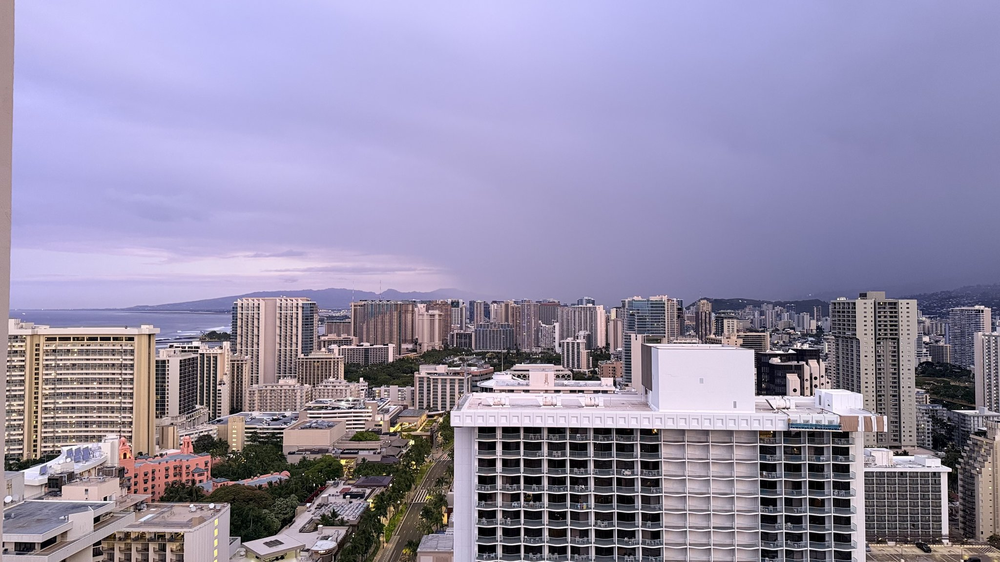
We stood out on the balcony for a long time, soaking in the electric atmosphere of Oahu. The slow, quiet rhythm of Napili Bay was officially behind us—we had arrived in the vibrant capital of paradise. To make the victory even sweeter, because we booked the entire stay on award points, the Hyatt completely waived the daily resort fees. Normally, "resort fees" or "amenity fees" are just a frustrating hidden tax that hotels tack on to give you basic Wi-Fi and a plastic water bottle. We've stayed at dozens of properties that charge them, and none of them ever actually provide anything of substance.
But looking over the schedule at the Hyatt Regency, we were genuinely excited to see a robust lineup of actual, authentic experiences included on the property. Looking at the beautiful layouts, we realized we might end up spending a massive chunk of our Oahu trip just enjoying the resort itself. Shweta was already bursting with excitement, instantly circling the schedule for tomorrow morning's authentic Ukulele and Hula dancing sessions. My agenda for the morning was a bit more focused on pure physical recovery—checking out their state-of-the-art fitness center, logging a solid workout, and hitting the sprawling pool deck to soak away the lingering fatigue from our Maui ocean swims in the steaming hot tub. We did take a peek at the on-site Na Ho’ola Spa, but as expected for a high-end beachfront resort, the pricing was astronomical compared to a regular spa session, so we happily skipped past it. We unpacked our bags, settled into our high-floor haven, and looked back out at the glowing neon grid of the city. We had completely optimized the transit, beaten the resort fees, and secured a front-row seat to Waikiki.
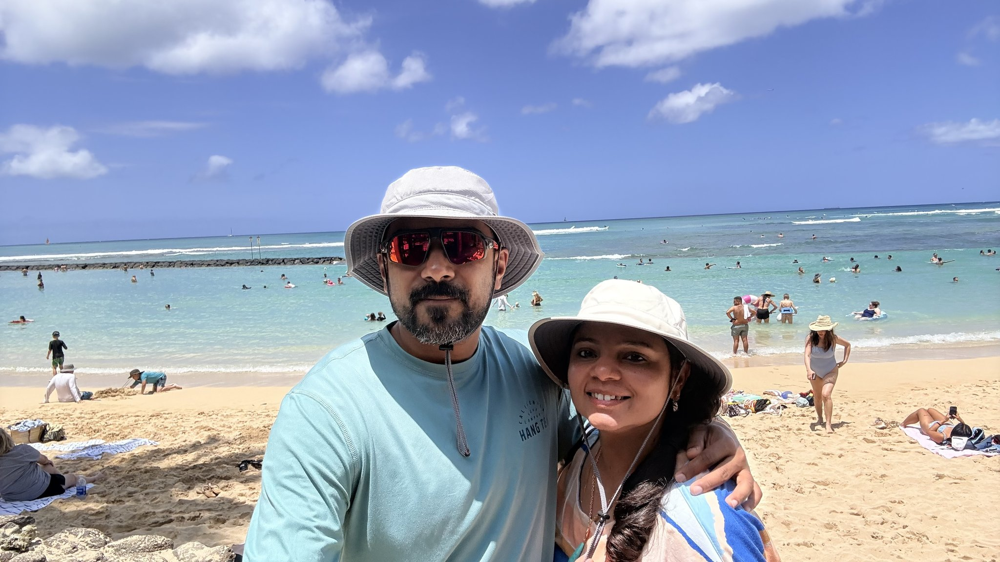
A High-Floor Feast and Early Lights Out
By the time we fully unpacked and settled into our room, the long day of cross-island transit had left us completely drained. Skipping the hassle of heading back down to the crowded tourist strip for dinner, we pulled up Uber Eats and ordered a comforting, heavy feast from a highly rated local spot called Spice Up.
When the delivery arrived, we spread the aromatic containers out in our high-floor haven. We dove into a rich, comforting spread of buttery Garlic Naan, perfectly stuffed Aloo Paratha, and velvety, slow-cooked Daal Makhani. To round out the meal, I added an order of tender, creamy Chicken Malai Tikka just for myself. The flavors were exceptionally rich and authentic, hitting the absolute spot after a long day under the Hawaiian sun. We were so completely exhausted that our eyes were heavy before we could even make a real dent in the spread; we managed to polish off only about half of the massive portions before packing the rest away. Leaving the twinkling neon grid of the Honolulu skyline glowing softly outside our balcony windows, we shut off the lights and hit the bed early, letting the absolute luxury of the Hyatt linens drift us off to sleep. Tomorrow, the resort activities were waiting.
Day 6: The Rhythms of Waikiki — Hula, Heavy Iron, and the Poolside Sun
If our days on Maui were defined by the high-adrenaline rush of chasing sunrise deadlines, navigating cliffside hairpin turns, and sprinting across open-ocean currents, Day 6 on Oahu was the absolute antithesis. We had officially transitioned into the slow, luxurious rhythm of premium resort life.
I simply cannot praise the Hyatt Regency Waikiki enough. Hands down, this is the absolute best resort property Shweta and I have ever experienced. What makes it stand out so profoundly isn't just the pristine location or the towering views—it’s the fact that they actually deliver a premium, high-value experience through their resort activities. Most luxury properties use "amenity fees" as a hidden cash grab, giving you nothing but a basic internet connection. Here, the calendar was absolutely packed with immersive, authentic Hawaiian cultural workshops, alongside peaceful Sunrise Yoga and specialized wellness classes.
Because the resort backs up its reputation with a world-class, 24-hour StayFit fitness center and a sprawling, sun-drenched pool deck, Shweta and I decided to execute a perfect "divide and conquer" morning strategy to fully soak in the amenities.
Sweating It Out and Stepping Into Hula
While I headed down to the gym to log a serious, uninterrupted session of heavy cardio and strength training, Shweta dove headfirst into the resort’s cultural lineup. For this first morning on the property, she focused entirely on the Hula dancing session, learning the fluid, historic hand movements, posture, and expressive footwork of the traditional Hawaiian dance. It was amazing watching her fully immerse herself in the local culture while I worked up a sweat under the gym iron.
By mid-morning, we reconnected exactly where we belonged: the legendary Hyatt poolside deck. The entire area surrounding the SWIM Restaurant & Bar is an absolute paradise for unwinding. The space is lined with plush, oversized lounge chairs and luxury private cabanas looking out toward the sparkling horizon. The resort also keeps things lively with an awesome open-air recreation lineup right by the deck. They had fast-paced Air Hockey tables, Foosball, and a beautiful table layout for Shuffleboard—that addictive, miniature-curling-style sport where you slide weighted pucks down a smooth surface, trying to precisely park them in the high-scoring zones without letting them slip off the edge.
We stayed wrapped up in the resort's private oasis all the way until noon, relaxing by the edge of the water, wrapped in the cool trade winds, completely unwinding without a single care in the world. For the first time all week, there was absolutely no rush.
A Tale of Two Islands and the Road to Pearl Harbor
Post-noon, the luxury of the resort faded seamlessly into the background as we shifted gears for the day's main event. For lunch, we kept things incredibly easy and economical, opening up our fridge to polish off the remaining half of our delicious, flavor-packed Indian leftovers from Spice Up. With our reserved tickets for the historic 2:45 PM USS Arizona Memorial tour locked in, we headed out to navigate the city’s transit system. True to our optimized transit plan, we hopped onto a city bus bound for the Pearl Harbor National Memorial.
It was during this ride that we experienced a definitive cultural shift. We found the city bus drivers here to be surprisingly harsh—a massive, jarring contrast to the warm, deeply patient people we had encountered all over Maui. In one instance, a female passenger politely asked for help with directions because she was trying to reach Kapolei; instead of offering guidance, the driver bluntly scolded her, telling her she should have checked which bus to take ahead of time instead of asking the driver. Shortly after, an elderly man tried to rest his bag on an empty seat next to him, and the driver sharply reprimanded him for it. It was a stark reminder that while we were still in Hawaii, we had firmly entered the fast-paced, sometimes cynical rhythm of a major metropolitan city.
Standing Over the Fallen Giant
Brushing off the gruff transit experience, we stepped off the bus and walked through the gates of the Pearl Harbor Visitor Center well ahead of our 2:45 PM boarding window. The experience began with a short, historical documentary film in the theater, laying out the timeline of the December 7, 1941 surprise attack and providing the technical background for the wreckage resting in the bay.
From the theater, we boarded the naval ferry to cross the smooth waters of the harbor toward the memorial. To tell you the truth, the experience wasn't an intensely heavy or emotionally overwhelming ordeal. Instead, it was an interesting look at a monumental piece of history. The entire battleship is gone, completely submerged, and the stark white memorial structure is an impressive piece of architecture constructed right over the top of where the ship used to be.
Looking down through the viewing grates into the green-blue water, you can see parts of the rusted, barnacle-covered hull resting quietly just beneath the surface. It was fascinating to see the infamous "black tears of Arizona"—the tiny, iridescent droplets of oil that still slowly float up to the surface from the fuel tanks more than 80 years later. We spent some time reading the long wall of names carved into the marble shrine at the back of the pavilion, appreciating the historical scale of the site before heading back to the docks.
A Waikiki Comfort Snack
By the time we boarded the ferry back to the visitor center, the physical toll of walking the grounds paired with the late afternoon hour left us completely starving. We caught the city bus heading straight back into the neon-lit corridors of Waikiki, our minds firmly set on tracking down some serious comfort food.
We hopped off the bus and headed straight to Molly's Burger for a heavy evening snack. After a long afternoon of walking and traveling, sinking our teeth into some hot, juicy burgers and crispy fries was exactly what the doctor ordered. It was the perfect, casual fuel to recharge our batteries. With our hands full of good food and the sun slowly dipping below the high-rise horizon, we made the short walk back to our high-floor sanctuary at the Hyatt Regency, ready to let the fatigue wash away and rest up for tomorrow's highly anticipated arts and crafts.
Day 7: The Artisan’s Morning and the Unforgiving Crater
Waking up for our second full morning at the Hyatt Regency, we had our luxury routine completely dialed in. The slow, self-paced luxury of the property had completely spoiled us, and we were eager to dive back into the premium activities schedule.
Shweta’s morning was dedicated to a double-header of authentic Hawaiian crafts. From 9:00 AM to 10:00 AM, she sat down with the resort's cultural instructors for her Beginner Ukulele session. The tutors were incredibly warm, patient, and friendly, breaking down the traditional string placements and strumming patterns so well that she thoroughly enjoyed every minute of it.
Once the morning strings wrapped up, we met up to grab a heavy, comforting brunch at Bikini Burger, a fantastic little spot located just a brief walk away down Liliʻuokalani Avenue. Sinking our teeth into some incredible, savory island-style burgers was the perfect fuel to bridge the day.
By 12:00 PM, we were right back at the resort. Shweta stepped into her highly anticipated Kui Lei Okika (Orchid Lei Stringing) workshop, sitting under the guidance of the friendly aunties to weave her own fragrant, vibrant purple orchids into a traditional floral masterpiece. While her hands were busy crafting, I headed down to the StayFit gym to log another heavy session of cardio and strength training, before we reconnected at the pool deck to unwind under the trade winds by SWIM Restaurant & Bar.
The Deceptive Slopes of Diamond Head
Our afternoon agenda featured a hard reservation for the iconic Diamond Head State Monument at 4:00 PM. True to our optimized public transit blueprint, we walked out to the Waikiki strip and caught the 3:20 PM city bus, expecting a swift, seamless transit right to the base of the trail.
It didn't take long for us to realize that none of the travel research online tells you the full truth about this hike. The blogs routinely classify Diamond Head as a simple, highly accessible paved path. What they completely fail to mention is the logistical reality of taking public transit: the city bus does not drop you off inside the volcanic crater. It anchors at the very bottom of the mountain on the exterior highway. To make matters worse, we hadn't brought a single water bottle with us, entirely underestimating the raw exposure of the trail. Before we could even clear the official park gates, we had to execute a long, punishing, uphill asphalt march under the blazing afternoon sun, trekking all the way up the mountain switchbacks and straight through the dark vehicle tunnel just to reach the visitor center trailhead.
By the time we reached the actual starting line, the heavy physical toll and lack of hydration had already completely drained our energy reserves. We began the ascent up the interior crater walls, tackling the steep switchbacks and uneven volcanic ground. Mid-hike, facing down a daunting wall of near-vertical concrete stairs and heavy crowds, Shweta wisely listened to her body and decided to give up the climb, heading back down to seek shade at the crater floor.
Determined to see the view through, I pushed forward, launching into the final, strenuous leg of the ascent. It was a brutal, incredibly sweaty hour of climbing, scaling the historic military bunkers and winding staircases. But the absolute moment I broke onto the summit ridge, the exhaustion vanished.
The view from the top was nothing short of magnificent—a flawless, 360-degree bird's-eye perspective of the entire sprawling Honolulu skyline, the crescent curves of Waikiki Beach below, and the vast, shimmering blue expanse of the Pacific running all the way to the horizon. I took a few minutes to catch my breath, snap some photos of the incredible coastline, and soak in the achievement before starting the quick gravity-assisted descent back down into the heart of the crater. Dripping with sweat and completely spent, I successfully made it back to the base camp, reuniting with Shweta at the visitor center to celebrate surviving the deceptive, unforgiving slopes of Lēʻahi.
A High-Calorie Triumphant Feast
By the time we caught the city bus back out through the mountain tunnel and away from the park, our bodies were screaming for one thing: serious, uncompromised comfort food. For us, that answer is always Indian cuisine. We completely bypassed the standard, overpriced tourist traps lining the immediate Waikiki beach strip and targeted Tadka Indian Cuisine, a fantastic local spot tucked into the nearby McCully Shopping Center.
We stepped out of the evening air and sat down, completely ravenous. We ordered a beautifully crisp, golden Dosa, a stack of perfectly layered, warm Paratha, and a rich, aromatic bowl of Paneer Butter Masala. Sinking our teeth into the savory potato filling of the dosa and scooping up the thick, velvety, spiced tomato-cream gravy of the paneer with pieces of fresh paratha was absolute heaven. It was exactly what our souls needed after the punishing, waterless heat of the afternoon.
Completely satisfied, full of spices, and thoroughly exhausted, we caught our final city bus back to our high-floor sanctuary at the Hyatt Regency. We threw open the balcony doors one last time to look out over the glittering Honolulu skyline, but we weren't lingering long tonight.
Tomorrow, paradise was coming to an end, replaced by a truly epic, mind-boggling transit marathon back to Chicago. Because we had fully optimized our points strategy to build this dream trip, we had signed ourselves up for a legendary, high-stakes multi-stop journey. Our marathon would begin with an early 7:40 AM island-hopper from Honolulu (HNL) back to Maui (OGG). From there, we would launch across the Pacific on a 12:15 PM flight to Los Angeles (LAX), touch down on the West Coast, and immediately board an 11:19 PM red-eye flight to Minneapolis (MSP). Finally, after a lightning-fast sunrise layover, we would board a 6:20 AM Wednesday commuter hop, finally touching down at O'Hare (ORD) at 8:30 AM.
Knowing the sheer, hectic scale of the travel chess match ahead of us, we packed our bags, checked our boarding passes, and collapsed into the Hyatt linens to squeeze out every drop of rest possible before the marathon commenced.